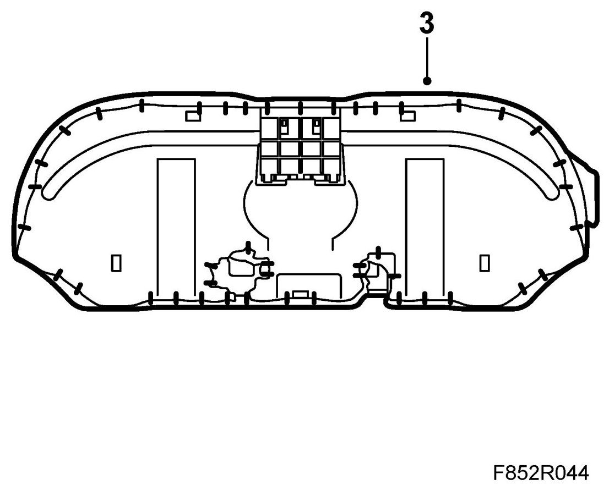
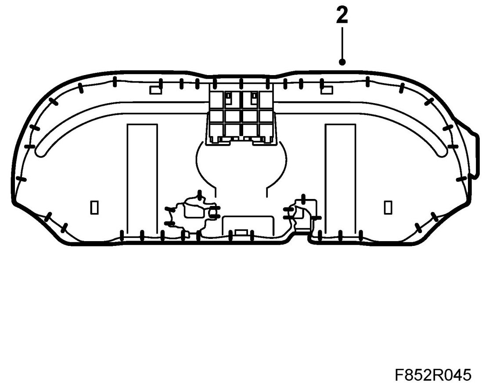

Upholstery, Rear Seat Cushion
Upholstery, Rear Seat Cushion
Removing
1. Remove the rear seat.
2. Remove the cup holder if fitted.
3. Cut the metal rings securing the upholstery.

4. Carefully prise the upholstery off the foam rear seat cushion.
Fitting
1. Fit the rear seat upholstery over the foam cushion. Make sure the upholstery is properly stretched.
2. Fit the metal rings. Use the special tool 84 71 062 Fitting kit, upholstery.

3. Fit the cup holder if removed.
4. Fit the rear seat.